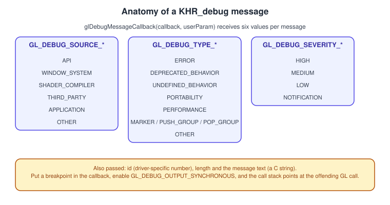
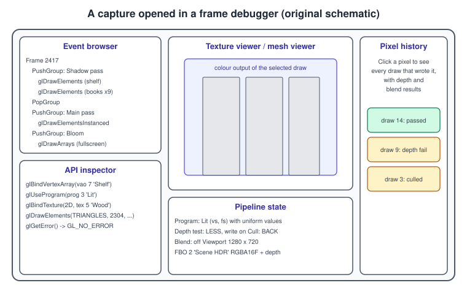
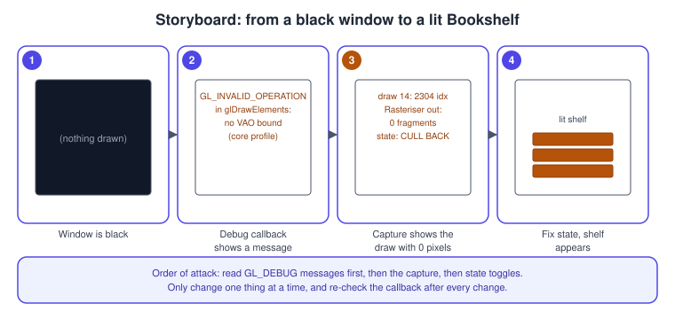

Debugging and Tools
|
This content was generated with the assistance of AI and should be verified against the official documentation before being relied on in production. |
OpenGL is a state machine whose errors are silent by default: a wrong enum or a missing binding does not stop the program, it records a flag (or nothing at all) and the next draw call renders a black window. Debugging therefore means making the driver talk, and then looking at what the GPU was actually asked to do. This page explains the tools in the order you should reach for them: the debug-output callback that reports errors the moment they happen, labels and groups that make the messages and the captures readable, frame debuggers (RenderDoc, apitrace and vendor tools) that show every draw call and its state, and a checklist of the mistakes that account for most black screens.
The facts were checked in November 2026. The versions documented are OpenGL 4.6 (GLSL 4.60) and OpenGL ES 3.2 (GLSL ES
3.20). Debug output (KHR_debug) is core in OpenGL 4.3 and in OpenGL ES 3.2, and is available as an extension on older
ES contexts; the macOS OpenGL implementation stops at 4.1 core, so it does not offer it and the frame debuggers and
glGetError are the main tools there. The examples extend the Bookshelf GL program (C++20, GLFW, glad2, GLM). Concepts
shared by every API are in Performance and Profiling, and the
pipeline being debugged is in the OpenGL rendering pipeline.
The debugging ladder
Work from the cheapest, most informative tool down to the heaviest, and stop at the first one that explains the bug.
The diagram assumes a core-profile context on a driver that supports KHR_debug. On macOS (OpenGL 4.1) the first two
decisions are replaced by glGetError after suspicious calls, which is explained next.
glGetError and why it is not enough
glGetError returns the oldest recorded error flag and clears it. The codes, from the reference page, are
GL_INVALID_ENUM, GL_INVALID_VALUE, GL_INVALID_OPERATION, GL_INVALID_FRAMEBUFFER_OPERATION,
GL_OUT_OF_MEMORY, GL_STACK_UNDERFLOW and GL_STACK_OVERFLOW, plus GL_CONTEXT_LOST (core since 4.5). A call that
generates an error is otherwise ignored, so a bad glBindTexture leaves the previous binding in place and the program
carries on with the wrong state.
The limits are practical:
-
An implementation may keep one flag per error category, and the call reports only one error per call to
glGetError, so you must loop until it returnsGL_NO_ERRORto drain them. -
The flag says what went wrong, not which call caused it. Checking after every call is the only way to locate it, and it is slow because some drivers synchronise with the GPU thread.
-
It reports only API misuse. A black triangle caused by a wrong matrix is not an error, and neither is a shader that compiled with a warning.
-
Errors are reported only for the context of the calling thread, so a worker thread with a shared context has its own flag.
A small helper that is compiled out in release builds is still useful as a fallback when the debug callback is not available (macOS, or an ES 2.0 and 3.0 context without the extension):
#include <glad/gl.h>
#include <cstdio>
// Drain and print every pending error, tagged with where it was noticed.
inline void checkGl(const char* where, int line) {
#ifndef NDEBUG
for (GLenum e; (e = glGetError()) != GL_NO_ERROR;) {
const char* name = "unknown";
switch (e) {
case GL_INVALID_ENUM: name = "GL_INVALID_ENUM"; break;
case GL_INVALID_VALUE: name = "GL_INVALID_VALUE"; break;
case GL_INVALID_OPERATION: name = "GL_INVALID_OPERATION"; break;
case GL_INVALID_FRAMEBUFFER_OPERATION: name = "GL_INVALID_FRAMEBUFFER_OPERATION"; break;
case GL_OUT_OF_MEMORY: name = "GL_OUT_OF_MEMORY"; break;
}
std::fprintf(stderr, "GL error %s (0x%04X) near %s:%d\n", name, e, where, line);
}
#endif
}
#define GL_CHECK() checkGl(__FILE__, __LINE__)Source: OpenGL 4 reference: glGetError
Older books and tutorials (the OpenGL SuperBible fourth edition, the OpenGL ES 2.0 and 3.0 programming guides) teach
glGetError as the main diagnostic and gluErrorString to print it. gluErrorString belongs to the GLU library, which
is not part of core OpenGL and is not shipped with modern setups, so write the switch yourself as above. The error
queue itself is still valid, but since OpenGL 4.3 and ES 3.2 the debug callback is the better tool.
The debug callback (KHR_debug)
Debug output delivers a message to your callback as soon as the driver notices a problem, with a source, a type, a
severity, an id and a human-readable text. It also reports performance warnings and portability hints that
glGetError never shows.

The figure lists the enumerants, all spelled GL_DEBUG_SOURCE_*, GL_DEBUG_TYPE_* and GL_DEBUG_SEVERITY_*. The types
include ERROR, DEPRECATED_BEHAVIOR, UNDEFINED_BEHAVIOR, PORTABILITY, PERFORMANCE, MARKER and the two group
types PUSH_GROUP and POP_GROUP. The messages that matter most carry GL_DEBUG_SEVERITY_HIGH and
GL_DEBUG_SEVERITY_MEDIUM; GL_DEBUG_SEVERITY_NOTIFICATION messages are chatty and usually filtered out.
Requesting a debug context
Debug output is always allowed to exist, but an implementation may do less work, and report fewer messages, in a context that was not created with the debug flag. Request it before creating the window, and keep it out of release builds because a debug context can be noticeably slower:
#include <glad/gl.h>
#include <GLFW/glfw3.h>
#include <cstdio>
#include <cstdlib>
#include <cstring>
// GLDEBUGPROC signature: the APIENTRY calling convention matters on Windows.
static void APIENTRY onGlDebug(GLenum source, GLenum type, GLuint id, GLenum severity,
GLsizei length, const GLchar* message, const void* user) {
(void)user;
if (severity == GL_DEBUG_SEVERITY_NOTIFICATION) return; // too chatty to print
const char* src = source == GL_DEBUG_SOURCE_API ? "API"
: source == GL_DEBUG_SOURCE_WINDOW_SYSTEM ? "WINDOW_SYSTEM"
: source == GL_DEBUG_SOURCE_SHADER_COMPILER ? "SHADER_COMPILER"
: source == GL_DEBUG_SOURCE_THIRD_PARTY ? "THIRD_PARTY"
: source == GL_DEBUG_SOURCE_APPLICATION ? "APPLICATION" : "OTHER";
const char* typ = type == GL_DEBUG_TYPE_ERROR ? "ERROR"
: type == GL_DEBUG_TYPE_DEPRECATED_BEHAVIOR ? "DEPRECATED"
: type == GL_DEBUG_TYPE_UNDEFINED_BEHAVIOR ? "UNDEFINED"
: type == GL_DEBUG_TYPE_PORTABILITY ? "PORTABILITY"
: type == GL_DEBUG_TYPE_PERFORMANCE ? "PERFORMANCE" : "OTHER";
const char* sev = severity == GL_DEBUG_SEVERITY_HIGH ? "HIGH"
: severity == GL_DEBUG_SEVERITY_MEDIUM ? "MEDIUM" : "LOW";
std::fprintf(stderr, "[GL %s/%s/%s id=%u] %.*s\n", src, typ, sev, id, (int)length, message);
if (type == GL_DEBUG_TYPE_ERROR && severity == GL_DEBUG_SEVERITY_HIGH) {
// Put a debugger breakpoint here: with synchronous output the stack shows the faulty call.
std::fflush(stderr);
}
}
int main() {
if (!glfwInit()) return EXIT_FAILURE;
glfwWindowHint(GLFW_CONTEXT_VERSION_MAJOR, 4);
glfwWindowHint(GLFW_CONTEXT_VERSION_MINOR, 3); // 4.3 or later has KHR_debug in core
glfwWindowHint(GLFW_OPENGL_PROFILE, GLFW_OPENGL_CORE_PROFILE);
#ifndef NDEBUG
glfwWindowHint(GLFW_OPENGL_DEBUG_CONTEXT, GLFW_TRUE);
#endif
GLFWwindow* window = glfwCreateWindow(1280, 720, "Bookshelf GL", nullptr, nullptr);
if (!window) { glfwTerminate(); return EXIT_FAILURE; }
glfwMakeContextCurrent(window);
if (!gladLoadGL(glfwGetProcAddress)) return EXIT_FAILURE;
GLint flags = 0;
glGetIntegerv(GL_CONTEXT_FLAGS, &flags);
if (flags & GL_CONTEXT_FLAG_DEBUG_BIT) {
glEnable(GL_DEBUG_OUTPUT);
glEnable(GL_DEBUG_OUTPUT_SYNCHRONOUS); // call the callback on the offending call
glDebugMessageCallback(onGlDebug, nullptr);
// Optional: ignore everything below medium severity from every source and type.
glDebugMessageControl(GL_DONT_CARE, GL_DONT_CARE, GL_DEBUG_SEVERITY_LOW, 0, nullptr, GL_FALSE);
glDebugMessageControl(GL_DONT_CARE, GL_DONT_CARE, GL_DEBUG_SEVERITY_NOTIFICATION, 0, nullptr, GL_FALSE);
// Inject a message of our own to prove the plumbing works.
const char* hello = "debug output enabled";
glDebugMessageInsert(GL_DEBUG_SOURCE_APPLICATION, GL_DEBUG_TYPE_MARKER, 0,
GL_DEBUG_SEVERITY_NOTIFICATION, -1, hello);
} else {
std::fprintf(stderr, "No debug context: fall back to glGetError\n");
}
// ... create resources and run the Bookshelf GL loop ...
glfwDestroyWindow(window);
glfwTerminate();
}The parameters, in the order the reference page gives them:
| Item | Meaning |
|---|---|
|
Master switch for debug output. Disabled until you enable it; a context created with the debug flag may enable it by default on some implementations, so enable it explicitly. |
|
Without it the implementation may call you later, on another thread, and the call stack is useless. With it the callback runs inside the offending GL call, so a breakpoint shows the exact line. Cost: slower, and the callback must be safe to call from any GL call. |
|
Registers the callback and one user pointer, which is passed back on every message (use it to find your logger). Only one callback is active at a time. |
|
Enables or disables messages by source, type, severity or a list of ids. Disable noisy driver ids here rather than filtering in the callback. |
|
Adds an application message to the same stream, so your markers appear with the driver’s. |
|
Alternative to the callback: poll the stored messages after a suspicious block of code. |
The callback must not call GL functions that change state, must not throw a C++ exception through the driver, and should return quickly. Logging and breaking are fine.
Labels and debug groups
A message that says "buffer 7 is not large enough" is useful once the object has a name. glObjectLabel attaches a
string to an object (GL_BUFFER, GL_SHADER, GL_PROGRAM, GL_VERTEX_ARRAY, GL_QUERY, GL_PROGRAM_PIPELINE,
GL_TRANSFORM_FEEDBACK, GL_SAMPLER, GL_TEXTURE, GL_RENDERBUFFER, GL_FRAMEBUFFER), and the labels appear in
driver messages and in the object lists of frame debuggers. glPushDebugGroup and glPopDebugGroup bracket a block of
commands under a named group, and the captures show the groups as a collapsible tree.
#include <glad/gl.h>
#include <string>
inline void label(GLenum ns, GLuint name, const std::string& text) {
if (GLAD_GL_VERSION_4_3 || GLAD_GL_KHR_debug)
glObjectLabel(ns, name, (GLsizei)text.size(), text.c_str());
}
// RAII group: the group closes at the end of the scope even on early return.
struct DebugGroup {
explicit DebugGroup(const char* name, GLuint id = 0) {
if (GLAD_GL_VERSION_4_3 || GLAD_GL_KHR_debug)
glPushDebugGroup(GL_DEBUG_SOURCE_APPLICATION, id, -1, name);
}
~DebugGroup() {
if (GLAD_GL_VERSION_4_3 || GLAD_GL_KHR_debug) glPopDebugGroup();
}
};
void drawFrame(GLuint shadowFbo, GLuint sceneFbo) {
{
DebugGroup g("Shadow pass");
glBindFramebuffer(GL_FRAMEBUFFER, shadowFbo);
// ... draw shelf and books ...
}
{
DebugGroup g("Main pass");
glBindFramebuffer(GL_FRAMEBUFFER, sceneFbo);
// ... draw lit shelf and books ...
}
}
// At creation time:
// glCreateBuffers / glGenBuffers ... then label(GL_BUFFER, vbo, "Shelf vertices");
// label(GL_PROGRAM, program, "Lit Blinn-Phong");
// label(GL_TEXTURE, woodTexture, "Wood base colour");Two details are easy to miss. First, glObjectLabel needs the object to exist: with glGenBuffers the name only
becomes an object after the first bind, so label after the first glBindBuffer, or use the glCreate* functions of
direct state access, which create the object immediately. Second,
glPushDebugGroup has a maximum nesting depth (GL_MAX_DEBUG_GROUP_STACK_DEPTH, at least 64), so do not push groups
per object in a loop of thousands.
Shader compile and link logs
A shader that fails to compile does not generate a GL error; the failure is in the compile status and the info log. A program that fails to link does the same. Always query both, and print the log:
#include <glad/gl.h>
#include <string>
#include <stdexcept>
GLuint compile(GLenum stage, const char* src, const char* name) {
GLuint sh = glCreateShader(stage);
glShaderSource(sh, 1, &src, nullptr);
glCompileShader(sh);
GLint ok = GL_FALSE;
glGetShaderiv(sh, GL_COMPILE_STATUS, &ok);
if (!ok) {
GLint len = 0;
glGetShaderiv(sh, GL_INFO_LOG_LENGTH, &len);
std::string log(len > 0 ? len : 1, '\0');
glGetShaderInfoLog(sh, len, nullptr, log.data());
glDeleteShader(sh);
throw std::runtime_error(std::string("Shader ") + name + " failed:\n" + log);
}
return sh;
}
GLuint link(GLuint vs, GLuint fs) {
GLuint prog = glCreateProgram();
glAttachShader(prog, vs);
glAttachShader(prog, fs);
glLinkProgram(prog);
GLint ok = GL_FALSE;
glGetProgramiv(prog, GL_LINK_STATUS, &ok);
if (!ok) {
GLint len = 0;
glGetProgramiv(prog, GL_INFO_LOG_LENGTH, &len);
std::string log(len > 0 ? len : 1, '\0');
glGetProgramInfoLog(prog, len, nullptr, log.data());
glDeleteProgram(prog);
throw std::runtime_error("Program link failed:\n" + log);
}
glDetachShader(prog, vs);
glDetachShader(prog, fs);
return prog;
}
// Optional extra check before a draw: does the current program accept the current GL state?
bool validate(GLuint prog) {
glValidateProgram(prog);
GLint ok = GL_FALSE;
glGetProgramiv(prog, GL_VALIDATE_STATUS, &ok);
return ok == GL_TRUE;
}The text of the info log is implementation specific: the same typo produces a different message on each driver, and
some drivers are strict about GLSL features that others accept (a missing f suffix, implicit conversions, an
unused-variable warning that becomes an error). Test shaders on more than one vendor, or run Khronos' glslang
validator on the file offline. More about programs, binaries and SPIR-V is in
Shaders and programs.
Frame debuggers
A debug callback tells you the API call was wrong. A frame debugger tells you what happened when every call was legal but the image is still wrong. It records one frame of API calls, replays them, and lets you step through the draw calls, view every texture and render target, inspect the bound program, uniform values and buffer contents, and see the pipeline state of each draw.

The usual layout has an event browser (the call list with your debug groups), an inspector of the selected call, a viewer for the colour output or textures, a pipeline-state panel and a pixel history. Pixel history is the fastest way to answer "why is this pixel the wrong colour?": it lists every draw that touched the pixel and whether each passed the depth, stencil and scissor tests.
RenderDoc
RenderDoc is a free, open-source frame debugger. For OpenGL it captures core-profile contexts from version 3.2 and OpenGL ES contexts from 2.0 to 3.2; the compatibility profile is not supported, which is another reason to stay in the core profile. Android capture works on a debuggable build with the Android tool in RenderDoc. Typical flow:
-
Launch the executable from RenderDoc’s launch panel, with the working directory of the assets. Do not use the compatibility profile.
-
Press the capture key (or the capture button) while the problem is on screen.
-
Open the capture and select a draw call in the event browser. The mesh viewer shows the vertex input and the transformed output, so a mesh that exists but never appears is quickly traced to the matrices.
-
Use the texture viewer to look at render targets, depth, and bound textures. Check the format and mip count.
-
Open the pipeline state to check the bound program, the depth, cull and blend state, the viewport and the scissor.
-
Use pixel history on a wrong pixel, and the shader debugger on the fragment shader of the draw that wrote it.
Because RenderDoc reads your glPushDebugGroup calls and object labels, the work done on this page makes the capture
readable. If the capture crashes on replay, disable extensions your program does not need, or check that the context
version is one RenderDoc supports.
apitrace
apitrace records the whole stream of GL calls into a file and can replay, dump or diff it. It is useful when you want to reproduce a driver bug on another machine, to find which call first produces an error, or to compare two drivers:
# Record: wraps the program and writes bookshelf.trace
apitrace trace --api gl ./bookshelf_gl
# Replay and check for errors on every call
apitrace replay --debug bookshelf.trace
# Dump the call stream as text, or the state at a given call
apitrace dump bookshelf.trace | less
# Interactive GUI (state, textures and buffers per call)
qapitrace bookshelf.traceSource: apitrace usage
Vendor and platform tools
-
NVIDIA Nsight Graphics supports OpenGL and offers a frame debugger and a GPU profiler for it. GPU vendors' tools mostly answer performance questions and are covered on the performance page.
-
Xcode’s frame capture and GPU tools target Metal, not OpenGL. The OpenGL stack on macOS is deprecated, so debug a macOS or iOS program through its Metal or ANGLE port when possible; see OpenGL ES on iOS and macOS.
-
Mesa drivers on Linux report problems through the same
KHR_debugcallback, and the software renderer llvmpipe is a deterministic reference for continuous integration. Setting the environment variableMESA_GL_VERSION_OVERRIDEchanges the version Mesa reports, which is useful to check that a program does not rely on features above its baseline. See Embedded and Linux. -
Comparing the output of a second implementation (for example a driver, Mesa llvmpipe and ANGLE) is the quickest way to find out whether a bug is yours or the driver’s.
Debugging a black screen, step by step
A black window is the most common first bug and has a small set of causes. This storyboard follows the Bookshelf shelf from nothing on screen to a rendered mesh.

-
Confirm the loop runs: set
glClearColorto a loud colour and check the window changes. If it does not, the context is not current on this thread, orglfwSwapBuffersis not being called. -
Read the debug callback output. A message such as "no vertex array object is bound" under a core profile is the classic cause; core profile has no default VAO.
-
Check the program: compile and link logs clean,
glUseProgramcalled, and uniform locations not-1(a-1is silently ignored byglUniform*). -
Capture a frame and select the draw. If the mesh viewer shows vertices but the output has no fragments, test the matrices (draw with the identity matrix and a triangle that is obviously inside clip space), the cull mode and the winding, the depth function, and the viewport and scissor.
-
Fix one thing and rerun with the callback enabled. Remove the loud clear colour afterwards.
The common mistakes list
| Symptom | Likely cause | Check |
|---|---|---|
Black window, no error |
No VAO bound in core profile, or attribute |
Callback message; mesh viewer shows empty input |
Mesh visible in the viewer, nothing on screen |
Culling with the wrong winding, a matrix that places the mesh behind the camera, a zero-sized viewport |
Draw with culling off, identity matrix; print the viewport |
Texture is black or white |
Texture incomplete: mipmap filter chosen but no mipmaps generated; unit not bound; sampler uniform not set |
|
Texture is upside down |
Image rows start at the top, but OpenGL texture coordinates start at the bottom; glTF uses a top-left origin |
|
Everything is too dark or washed out |
Colour space mismatch: sRGB texture not marked, or output not converted to sRGB |
|
Depth looks wrong, far objects over near ones |
Depth test not enabled, depth buffer not requested, or near plane too close |
|
Transparent surfaces are wrong |
Drawn in the wrong order or writing depth |
|
Incomplete framebuffer |
Missing attachment or mismatched sizes, or a format that cannot be rendered to |
|
Corrupt vertices or crash in the driver |
Index type does not match the element buffer, stride or offset wrong, buffer smaller than the draw reads |
Buffer sizes, |
Uniform changes do nothing |
Program not bound when calling |
|
Works on one GPU, fails on another |
Reading uninitialised variables, relying on a vendor leniency, or undefined behaviour in a barrier or alignment rule |
Run on a second driver or llvmpipe, and test with the debug callback on every machine |
Stutter every few seconds |
Shader compile or link on first use, buffer synchronisation, texture upload in the render loop |
See Performance |
Older books suggest checking glGetError once at the end of the frame, and some use glGetString(GL_EXTENSIONS).
In the core profile glGetString(GL_EXTENSIONS) is not allowed and generates GL_INVALID_ENUM; iterate with
glGetStringi and GL_NUM_EXTENSIONS, or let the glad2 loader tell you which extensions loaded.
Robustness and context loss
Programs that must survive a driver reset, such as a long-running viewer, request a robust context
(GLFW_CONTEXT_ROBUSTNESS with GLFW_LOSE_CONTEXT_ON_RESET, which maps to ARB_robustness or KHR_robustness) and
poll glGetGraphicsResetStatus. After a reset the context is lost and every object must be recreated. Mobile systems
can also destroy the context when the app goes to the background; the Android lifecycle details are in
OpenGL ES on Android.
Recent changes
-
Debug output moved from the
ARB_debug_outputandAMD_debug_outputextensions to the singleKHR_debugextension, which is core in OpenGL 4.3 (2012) and OpenGL ES 3.2 (2015). New code should use the core names without a suffix on desktop and theKHRsuffix on ES 3.0 and older contexts. -
Direct state access (OpenGL 4.5) makes object creation and labelling simpler; see Direct state access.
-
Frame debuggers decode a fixed set of OpenGL functions, so an extension added recently, such as the mesh shader extension of 2025, is only replayable once the tool adds support for it; check the tool’s documentation first.